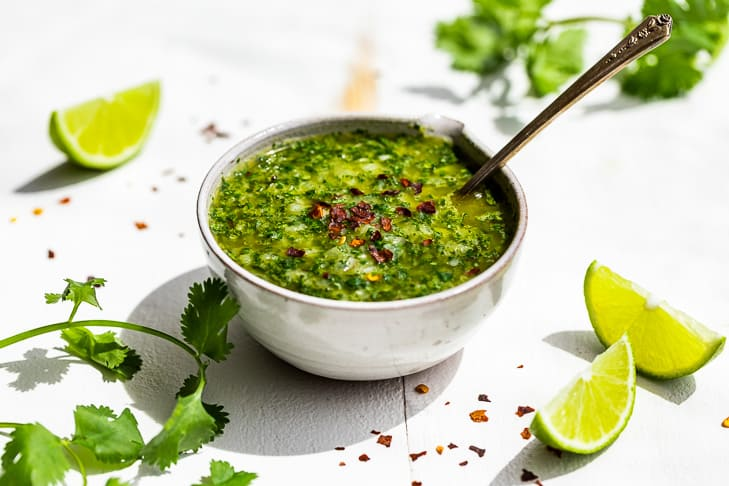

Chimichurri

This dish is used as both a marinade and a topping for many legendary meat dishes. Argentinean chimichurri is
centered with chopped fresh parsley, oregano, garlic, olive oil, vinegar, and red pepper flakes.
Ingredients
- 1 cup fresh flat-leaf parsley. Trim thick stems and pack firmly
- 4 garlic cloves
- 2 tbsp fresh oregano
- 1/3 cup extra virgin olive oil
- 2 tbsp vinegar (Red wine vinegar or white vinegar)
- 1/2 tsp sea salt
- One pinch of ground pepper
- One pinch of red pepper flakes
Instructions
- Finely chop the parsley, garlic, and oregano together. (If you have a food processor, this is a good time to use it). Combine into a small bowl.
- Mix in the olive oil, vinegar, salt, pepper, and red pepper flakes.
- Serve fresh or chill in the refrigerator for up to 10 days. Make sure to serve at room temperature.